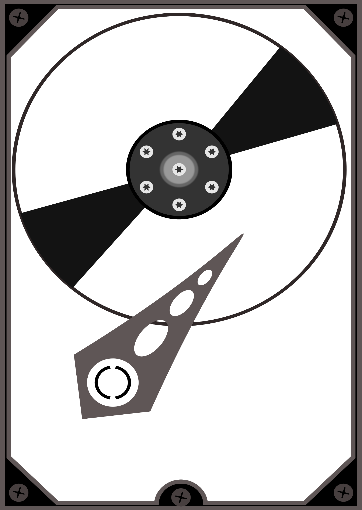

Replacing The Memory
The hardest part of replacing the memory is figuring out what memory you need. Luckily, crucial.com comes to the rescue with a simple memory scanner app for both Windows and Mac. Just download it, run it, and it’ll tell you what kind of memory your machine is running (which you can then buy from Crucial.com, of course).
Replacing The Hard Disk

If your hard disk has failed then replacing it is the easy part – getting your data back and restoring everything from backups is harder. All you really need to know is what type of hard disk you currently have, and if your motherboard can handle SATA.
Replacing The Power Supply
The most common failure in any computer is the power supply, but it’s a moderately simply process to replace. Unless you have a very small form factor or all-in-one PC, ATX power supplies are basically all the same.